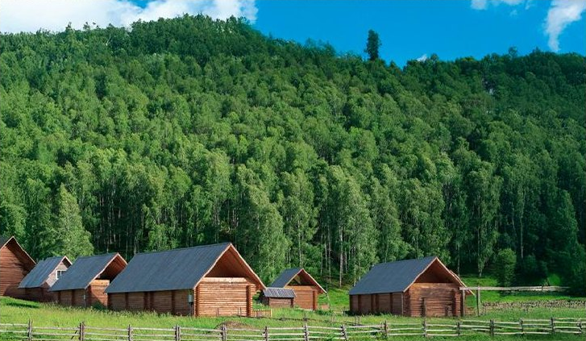
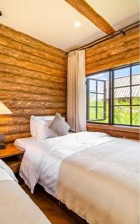
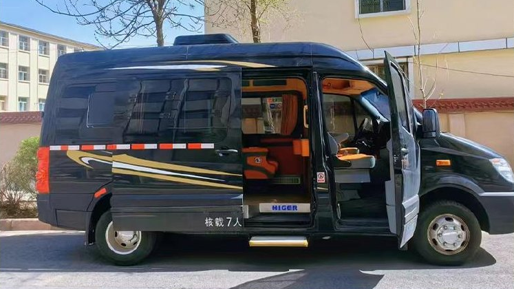
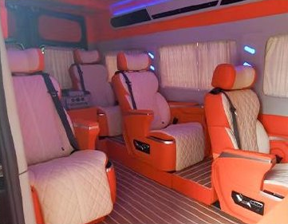

双湖串联
喀纳斯湖与赛里木湖，一次感受两种湖光；含赛湖自驾环湖与次日二进。

THE JOURNEY
湖畔漫步、林间下午茶、木屋晨景。把北疆的开阔与细节，都留进旅程。
喀纳斯湖与赛里木湖，一次感受两种湖光；含赛湖自驾环湖与次日二进。
禾木与白哈巴各住一晚，把更多时间留给村落日暮与清晨。
禾木轻旅拍每人 9 张简修照片，不含妆造；赛湖跟车视频一团一条。
2 人成行，6 人封顶。七座营运商务车、1+1 独立座椅，纯玩无购物。


EIGHT DAYS IN XINJIANG
乌鲁木齐集散，沿 S21 向北进入阿勒泰，再经喀纳斯前往赛里木湖。
一路向北，再遇双湖
24 小时接机或接站，抵达后入住酒店。自由活动，感受乌鲁木齐的城市日常。
住：乌鲁木齐 · 携程五钻穿越 S21 沙漠高速，游克拉美丽沙山公园，途观乌伦古湖。前往将军山，体验落日缆车、夕阳派对与露天电影。
住：阿勒泰 · 携程四钻阿禾公路开放时沿线穿行森林与草原，前往禾木村。安排轻旅拍及自然森系下午茶，夜宿景区特色木屋。
住：禾木 · 景区特色木屋上午感受禾木村的晨景，下午游览喀纳斯湖。傍晚抵达白哈巴，住进大窗特色木屋。
住：白哈巴 · 大窗特色木屋返回喀纳斯，游览神仙湾、月亮湾、卧龙湾，沿途看河水与森林交织，随后前往克拉玛依。
住：克拉玛依 · 携程四钻自驾环湖，择优游览月亮湾、亲水滩、西海草原、克勒涌珠及网红 S 弯等点位，安排赛湖跟车视频。
住：赛湖小镇 · 携程四钻清晨再次进入赛里木湖，在月亮湾附近散步观景，随后返回乌鲁木齐。二进不安排再次环湖。
住：乌鲁木齐 · 携程四钻早餐后自由活动，根据航班或车次安排送机、送站，结束双湖之旅。
住：返程日 · 不含住宿STAY IN THE SCENERY
城市品质酒店与景区木屋搭配，以下为该产品住宿参考图。具体酒店、房型按团期安排，不能指定。
抵达日乌鲁木齐品质酒店
阿勒泰、克拉玛依、赛湖小镇及返程前乌鲁木齐
禾木与白哈巴各一晚




当地行程使用具营运资质的七座商务车，不指定车型。司机负责驾驶与行程衔接，不配导游。
乌鲁木齐 24 小时接送机／站；接送可能使用普通五座车或商务车。
BEFORE YOU GO
选择线路前，先看清包含项目与需要另行安排的部分。
EXPLORE THE COLLECTION